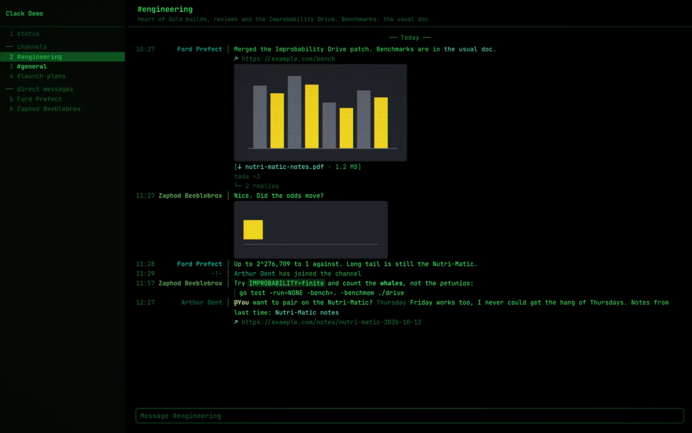

quiet the noise.

install
macos
curl -fsSL https://raw.githubusercontent.com/nullentropy/clack/main/install.sh | shdownloads the latest release into /Applications.
linux
curl -fsSL https://raw.githubusercontent.com/nullentropy/clack/main/install.sh | shinstalls clack in ~/.local
windows
in powershell:
irm https://raw.githubusercontent.com/nullentropy/clack/main/install.ps1 | iexinstalls clack in %LOCALAPPDATA%\Programs\clack and adds it to the start menu.
requirements
- a slack workspace that lets you create and install apps
- on linux: an x11 or xwayland desktop with opengl, the alsa library, and notify-send (for notifications)